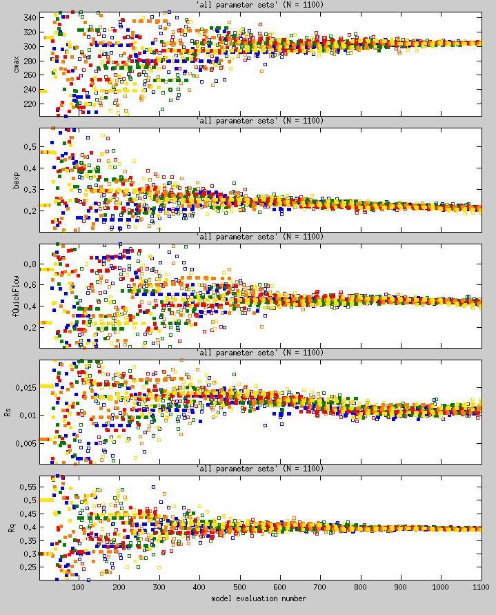
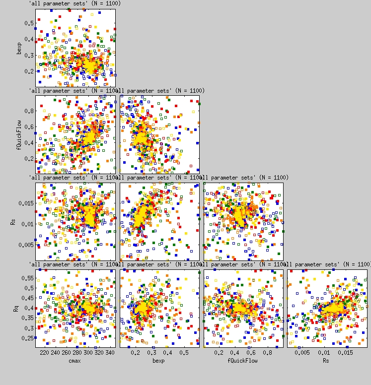

mmsodaMatrixOfScatter(conf,typeStr,sequences,metropolisRejects)
handles = mmsodaMatrixOfScatter(conf,typeStr,sequences,metropolisRejects)
mmsodaMatrixOfScatter(conf,typeStr,sequences,metropolisRejects,...)
mmsodaMatrixOfScatter() can be used to visualize the contents of the sequences and metropolisRejects arrays that are created by mmsoda(). As an example, mmsodaMatrixOfScatter() may be used to generate scatterplots of the evaluation number (see evalCol in the table of configuration variables) on the horizontal axes, versus the parameter value (see parCols in the table of configuration variables) on the vertical axes by setting the typeStr input argument (see table below) to 'eval-par'as follows:
mmsodaMatrixOfScatter(conf,'eval-par',sequences,metropolisRejects,'nHistory','all')
which results in:

(the colors indicate which sequence a particular point is in).
Another typical use case of mmsodaMatrixOfScatter() is for plotting correlations between parameters by setting the typeStr input argument to 'par-par'as follows:
mmsodaMatrixOfScatter(conf,'par-par',sequences,metropolisRejects,'nHistory','all')
which results in:

The table below lists the possible values that typeStr can have, and what mmsodaMatrixOfScatter's behavior is with each.
| Value of typeStr | Description |
| 'eval-par' | Model evaluation number on the horizontal axes versus the parameter value on the vertical axes. |
| 'eval-ll' | Model evaluation number on the horizontal axes versus the log likelihood on the vertical axes. |
| 'll-eval' | Log likelihood on the horizontal axes versus the model evaluation number on the vertical axes. |
| 'll-par' | Log likelihood on the horizontal axes versus the parameter value on the vertical axes. |
| 'll-ll' | Log-likelihood on the horizontal axes versus the log-likelihood on the vertical axes (multi-objective only). |
| 'll-pareto' | Log-likelihood on the horizontal axes versus the Pareto score on the vertical axes (multi-objective only). |
| 'par-eval' | Parameter value on the horizontal axes versus the model evaluation number on the vertical axes. |
| 'par-par' | Parameter value on the horizontal axes versus the parameter value on the vertical axes. |
| 'par-ll' | Parameter value on the horizontal axes versus the log likelihood on the vertical axes. |
| 'par-pareto' | Parameter value on the horizontal axes versus the Pareto score on the vertical axes (multi-objective only). |
| 'pareto-par' | Pareto score on the horizontal axes versus the parameter value on the vertical axes (multi-objective only). |
| 'pareto-ll' | Pareto score on the horizontal axes versus the log likelihood on the vertical axes. |
The table below lists the authorized options with which mmsodaMatrixOfScatter may be called.
| Option | Description |
| 'bgColor' | 1x3 vector with background color for the axes. |
| 'colorList' | Nx3 list of colors for differentiating between the sequences. |
| 'fontsize' | Font size of the axes labels. |
| 'hideBadScore' | Ignore any bad scores (see badScore) in scaling the axes. |
| 'objTexNames' | Cell array of string in which you can store TeX formatted strings to describe the objective function. |
| 'linestyleRej' | The line style with which the Metropolis-rejected points are connected. |
| 'linestyleSeq' | The line style with which the Metropolis-accepted points are connected. |
| 'markerRej' | The marker with which the Metropolis-rejected points are displayed. |
| 'markerSeq' | The marker with which the Metropolis-accepted points are displayed. |
| 'markersizeRej' | The marker size with which the Metropolis-rejected points are displayed. |
| 'markersizeSeq' | The marker size with which the Metropolis-accepted points are displayed. |
| 'nHistory' | This option is used to select the last part of the record in visualization. Valid values are positive integer scalar, or you can use any of the following strings: 'all' (use all available data), 'nSamples' (use the last nSamples samples), 'noinit' (use all available data except those from the initialization), '50%+' (use the last half of the data record), 'H2' (use the last half of the data record), '75%+' (use the last quarter of the data record), and 'Q4' (use the last quarter of the data record). The default behavior is to use the last 5*nSamples samples. |
| 'showNumberOfPoints' | Show the number of points that were used in constructing the figure as part of the title. Default is true. |
| 'showRejects' | Show the Metropolis-rejected samples. Default is true. |